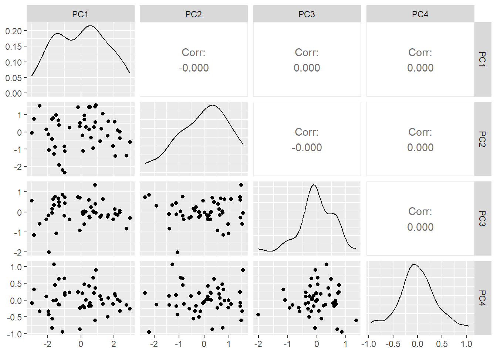
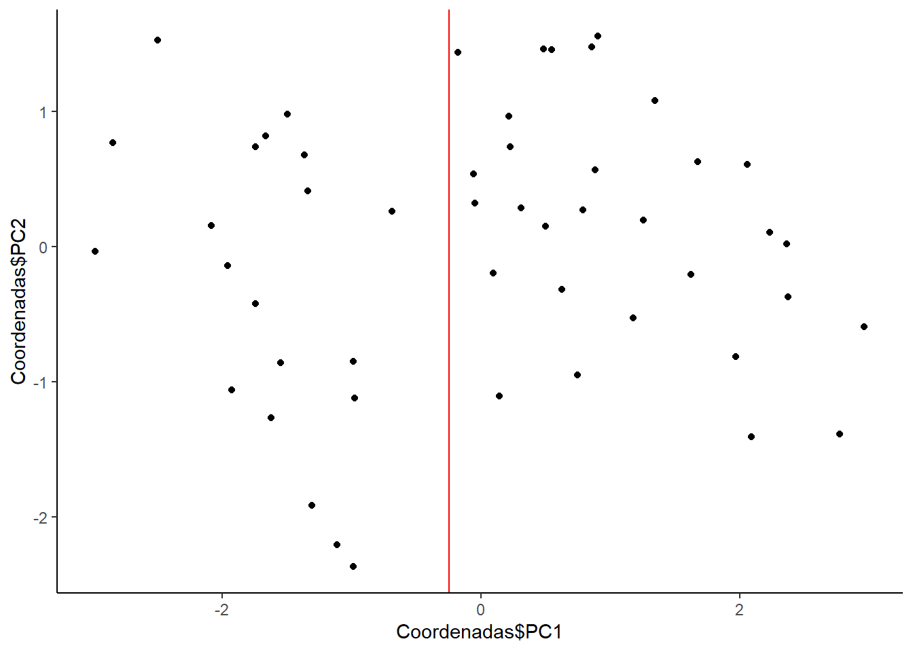

Chapter 5 Ejercicio 5
5.1 Enunciado y variables
Para este ejercicio se utiliza el conjunto de datos de los crímenes violentos en los Estados Unidos que se puede encontrar en la librería datasets de R. El fichero contiene cuatro serie de variables para los \(50\) estados de Estados Unidos. Las variables son:
Murder: Número de arrestos por asesinato por \(100000\) habitantes.Assault: Número de arrestos por agresiones por \(100000\) habitantes.UrbanPop: Porcentaje de población urbana.Rape: Número de arrestos por violación por \(100000\) habitantes.
Nuestro objetivo es determinar estados con características similares en término de crímenes violentos. Se pide:
5.2 Apartado a
- Importar el conjunto de datos
USArrests. Comprobar que la dimensión deldata.framecorrespondiente al conjunto de datos es \(50\times 4\), es decir, que disponemos de \(50\) estados y \(4\) variables. Además, ver el conjunto de datos.
library(datasets) #Cargamos la libreria
data("USArrests") #Importamos los datos en la memoria
dim(USArrests) #Vemos que la dimensión coincida## [1] 50 4knitr::kable(USArrests) #Mostramos el conjunto de datos entero| Murder | Assault | UrbanPop | Rape | |
|---|---|---|---|---|
| Alabama | 13.2 | 236 | 58 | 21.2 |
| Alaska | 10.0 | 263 | 48 | 44.5 |
| Arizona | 8.1 | 294 | 80 | 31.0 |
| Arkansas | 8.8 | 190 | 50 | 19.5 |
| California | 9.0 | 276 | 91 | 40.6 |
| Colorado | 7.9 | 204 | 78 | 38.7 |
| Connecticut | 3.3 | 110 | 77 | 11.1 |
| Delaware | 5.9 | 238 | 72 | 15.8 |
| Florida | 15.4 | 335 | 80 | 31.9 |
| Georgia | 17.4 | 211 | 60 | 25.8 |
| Hawaii | 5.3 | 46 | 83 | 20.2 |
| Idaho | 2.6 | 120 | 54 | 14.2 |
| Illinois | 10.4 | 249 | 83 | 24.0 |
| Indiana | 7.2 | 113 | 65 | 21.0 |
| Iowa | 2.2 | 56 | 57 | 11.3 |
| Kansas | 6.0 | 115 | 66 | 18.0 |
| Kentucky | 9.7 | 109 | 52 | 16.3 |
| Louisiana | 15.4 | 249 | 66 | 22.2 |
| Maine | 2.1 | 83 | 51 | 7.8 |
| Maryland | 11.3 | 300 | 67 | 27.8 |
| Massachusetts | 4.4 | 149 | 85 | 16.3 |
| Michigan | 12.1 | 255 | 74 | 35.1 |
| Minnesota | 2.7 | 72 | 66 | 14.9 |
| Mississippi | 16.1 | 259 | 44 | 17.1 |
| Missouri | 9.0 | 178 | 70 | 28.2 |
| Montana | 6.0 | 109 | 53 | 16.4 |
| Nebraska | 4.3 | 102 | 62 | 16.5 |
| Nevada | 12.2 | 252 | 81 | 46.0 |
| New Hampshire | 2.1 | 57 | 56 | 9.5 |
| New Jersey | 7.4 | 159 | 89 | 18.8 |
| New Mexico | 11.4 | 285 | 70 | 32.1 |
| New York | 11.1 | 254 | 86 | 26.1 |
| North Carolina | 13.0 | 337 | 45 | 16.1 |
| North Dakota | 0.8 | 45 | 44 | 7.3 |
| Ohio | 7.3 | 120 | 75 | 21.4 |
| Oklahoma | 6.6 | 151 | 68 | 20.0 |
| Oregon | 4.9 | 159 | 67 | 29.3 |
| Pennsylvania | 6.3 | 106 | 72 | 14.9 |
| Rhode Island | 3.4 | 174 | 87 | 8.3 |
| South Carolina | 14.4 | 279 | 48 | 22.5 |
| South Dakota | 3.8 | 86 | 45 | 12.8 |
| Tennessee | 13.2 | 188 | 59 | 26.9 |
| Texas | 12.7 | 201 | 80 | 25.5 |
| Utah | 3.2 | 120 | 80 | 22.9 |
| Vermont | 2.2 | 48 | 32 | 11.2 |
| Virginia | 8.5 | 156 | 63 | 20.7 |
| Washington | 4.0 | 145 | 73 | 26.2 |
| West Virginia | 5.7 | 81 | 39 | 9.3 |
| Wisconsin | 2.6 | 53 | 66 | 10.8 |
| Wyoming | 6.8 | 161 | 60 | 15.6 |
Vemos que parecen estar de la forma correcta.
5.3 Apartado b
- Obtener una matriz de diagramas de dispersión de las cuatro variables con la función
ggpairsde la libreríaGGally. ¿Se ven grupos de estados con características similares?
library(GGally) #Cargamos la libreria necesaria para usar la función ggpairs## Warning: package 'GGally' was built under R version 4.3.1## Registered S3 method overwritten by 'GGally':
## method from
## +.gg ggplot2ggpairs(data = USArrests) #Nos devuelve una matriz de diagramas de dispersión de nuestros datos.## ## plot: [1,1] [=>---------------------------] 6% est: 0s
## plot: [1,2] [===>-------------------------] 12% est: 1s
## plot: [1,3] [====>------------------------] 19% est: 1s
## plot: [1,4] [======>----------------------] 25% est: 1s
## plot: [2,1] [========>--------------------] 31% est: 1s
## plot: [2,2] [==========>------------------] 38% est: 1s
## plot: [2,3] [============>----------------] 44% est: 1s
## plot: [2,4] [=============>---------------] 50% est: 1s
## plot: [3,1] [===============>-------------] 56% est: 0s
## plot: [3,2] [=================>-----------] 62% est: 0s
## plot: [3,3] [===================>---------] 69% est: 0s
## plot: [3,4] [=====================>-------] 75% est: 0s
## plot: [4,1] [=======================>-----] 81% est: 0s
## plot: [4,2] [========================>----] 88% est: 0s
## plot: [4,3] [==========================>--] 94% est: 0s
## plot: [4,4] [=============================]100% est: 0s
Vemos que las relaciones entre Rape, Assault y Murder, parecen tener una tendencia lineal y positiva, siendo las más fuertes Murder con Assault y Rape con Assault, esto lo inferimos al fijarnos en los coeficientes de correlación de Pearson.
5.4 Apartado c
- Obtener los componentes principales del conjunto de datos utilizando la matriz de correlación mediante la función
prcomp. Para ello, añadir la opciónscale=T. Obtener una matriz de diagramas de dispersión de las componentes principales. Notar que para ello, hay que definir la matriz de puntuaciones en undata.frame. ¿Se ven grupos de estados con características similares en los componentes principales?
(componentes = prcomp(x = USArrests, scale = TRUE)) #Calculamos las componentes## Standard deviations (1, .., p=4):
## [1] 1.5748783 0.9948694 0.5971291 0.4164494
##
## Rotation (n x k) = (4 x 4):
## PC1 PC2 PC3 PC4
## Murder -0.5358995 -0.4181809 0.3412327 0.64922780
## Assault -0.5831836 -0.1879856 0.2681484 -0.74340748
## UrbanPop -0.2781909 0.8728062 0.3780158 0.13387773
## Rape -0.5434321 0.1673186 -0.8177779 0.08902432Coordenadas = componentes$x #Guardamos las puntuaciones en un objetocomponentes$sdev[1]/sum(componentes$sdev)## [1] 0.4395018(componentes$sdev[1] + componentes$sdev[2])/sum(componentes$sdev)## [1] 0.7171403Vemos que con las dos primeras componentes ya explicamos el 71.7% de la variabilidad de nuestros datos.
Coordenadas = data.frame(Coordenadas) #Las convertimos en data.frame
ggpairs(data = Coordenadas) #Las visualizamos## plot: [1,1] [=>---------------------------] 6% est: 0s
## plot: [1,2] [===>-------------------------] 12% est: 0s
## plot: [1,3] [====>------------------------] 19% est: 1s
## plot: [1,4] [======>----------------------] 25% est: 1s
## plot: [2,1] [========>--------------------] 31% est: 1s
## plot: [2,2] [==========>------------------] 38% est: 1s
## plot: [2,3] [============>----------------] 44% est: 1s
## plot: [2,4] [=============>---------------] 50% est: 0s
## plot: [3,1] [===============>-------------] 56% est: 0s
## plot: [3,2] [=================>-----------] 62% est: 0s
## plot: [3,3] [===================>---------] 69% est: 0s
## plot: [3,4] [=====================>-------] 75% est: 0s
## plot: [4,1] [=======================>-----] 81% est: 0s
## plot: [4,2] [========================>----] 88% est: 0s
## plot: [4,3] [==========================>--] 94% est: 0s
## plot: [4,4] [=============================]100% est: 0s Nos vamos a centrar en el gráfico que tiene a las dos primeras componentes, ya que es dónde se resume la mayor parte de la información de nuestros datos, antes de esto vamos a ver las puntuaciones de nuestras componentes para hacernos una idea de lo que nos indican cada una de ellas.
componentes$rotation## PC1 PC2 PC3 PC4
## Murder -0.5358995 -0.4181809 0.3412327 0.64922780
## Assault -0.5831836 -0.1879856 0.2681484 -0.74340748
## UrbanPop -0.2781909 0.8728062 0.3780158 0.13387773
## Rape -0.5434321 0.1673186 -0.8177779 0.08902432En la primera componente, todas las variables toman signo negativo, por lo que a la izquierda de la primera componente tendremos ciudades menos seguras, en el sentido de que van a tener más arrestos por las tres causas que resumen nuestros datos y además un número mayor de población urbana.
Respecto a la segunda componente, vemos que el factor que más peso tiene es la población urbana, por lo que a la derecha de esta componente esperamos tener ciudades con mucha población urbana y que además son seguras ya que tendrán pocos arrestos por asesinato.
Vemos el gráfico de las dos primeras componentes
ggplot(data = Coordenadas,aes(x = Coordenadas$PC1, y = Coordenadas$PC2)) +
geom_point() +
theme_classic() +
geom_vline(xintercept = -0.25, color = "Red")
La división en grupos más clara es la marcada por la línea roja, que divide la primera componente, en la cual vamos a tener a su izquirda como hemos comentado antes, ciudades poco seguras, dónde los detenidos por los crímenes tratados son más altos, mientras que a la derecha de la línea todo lo contrario.
Destacar que esta división se puede observar en cualquier gráfico que realicemos con la primera componente, en el resto no se observan grupos claros, podría ser interesante realizar alguna rotación para ver los resultados de una forma algo más clara.